2 Section 1 - Introduction to Regression Overview
In the Introduction to Regression section, you will learn the basics of linear regression.
After completing this section, you will be able to:
- Understand how Galton developed linear regression.
- Calculate and interpret the sample correlation.
- Stratify a dataset when appropriate.
- Understand what a bivariate normal distribution is.
- Explain what the term variance explained means.
- Interpret the two regression lines.
This section has three parts: Baseball as a Motivating Example, Correlation, and Stratification and Variance Explained.
2.1 Motivating Example: Moneyball
The corresponding section of the textbook is the case study on Moneyball
Key points
Bill James was the originator of the sabermetrics, the approach of using data to predict what outcomes best predicted if a team would win.
2.2 Baseball basics
The corresponding section of the textbook is the section on baseball basics
Key points
- The goal of a baseball game is to score more runs (points) than the other team.
- Each team has 9 batters who have an opportunity to hit a ball with a bat in a predetermined order.
- Each time a batter has an opportunity to bat, we call it a plate appearance (PA).
- The PA ends with a binary outcome: the batter either makes an out (failure) and returns to the bench or the batter doesn’t (success) and can run around the bases, and potentially score a run (reach all 4 bases).
- We are simplifying a bit, but there are five ways a batter can succeed (not make an out):
- Bases on balls (BB): the pitcher fails to throw the ball through a predefined area considered to be hittable (the strike zone), so the batter is permitted to go to first base.
- Single: the batter hits the ball and gets to first base.
- Double (2B): the batter hits the ball and gets to second base.
- Triple (3B): the batter hits the ball and gets to third base.
- Home Run (HR): the batter hits the ball and goes all the way home and scores a run.
- Historically, the batting average has been considered the most important offensive statistic. To define this average, we define a hit (H) and an at bat (AB). Singles, doubles, triples and home runs are hits. The fifth way to be successful, a walk (BB), is not a hit. An AB is the number of times you either get a hit or make an out; BBs are excluded. The batting average is simply H/AB and is considered the main measure of a success rate.
2.3 Bases on Balls or Stolen Bases?
The corresponding section of the textbook is the base on balls or stolen bases textbook section
Key points
The visualization of choice when exploring the relationship between two variables like home runs and runs is a scatterplot.
Code: Scatterplot of the relationship between HRs and runs
if(!require(Lahman)) install.packages("Lahman")## Loading required package: Lahmanif(!require(tidyverse)) install.packages("tidyverse")
if(!require(dslabs)) install.packages("dslabs")
library(Lahman)
library(tidyverse)
library(dslabs)
ds_theme_set()
Teams %>% filter(yearID %in% 1961:2001) %>%
mutate(HR_per_game = HR / G, R_per_game = R / G) %>%
ggplot(aes(HR_per_game, R_per_game)) +
geom_point(alpha = 0.5)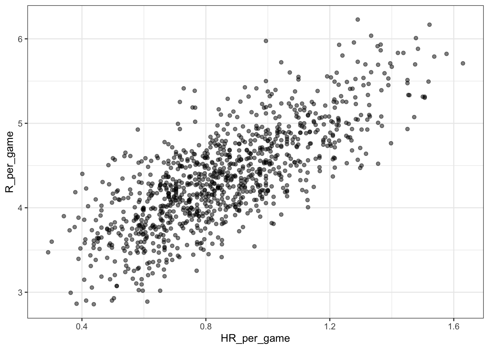
Code: Scatterplot of the relationship between stolen bases and runs
Teams %>% filter(yearID %in% 1961:2001) %>%
mutate(SB_per_game = SB / G, R_per_game = R / G) %>%
ggplot(aes(SB_per_game, R_per_game)) +
geom_point(alpha = 0.5)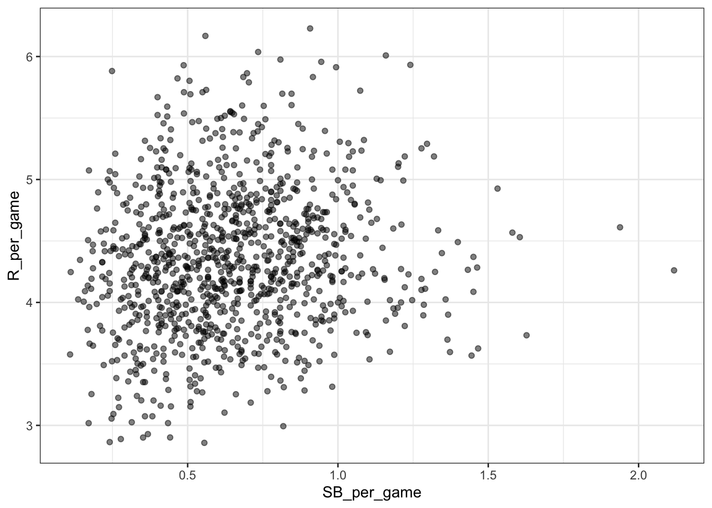
Code: Scatterplot of the relationship between bases on balls and runs
Teams %>% filter(yearID %in% 1961:2001) %>%
mutate(BB_per_game = BB / G, R_per_game = R / G) %>%
ggplot(aes(BB_per_game, R_per_game)) +
geom_point(alpha = 0.5)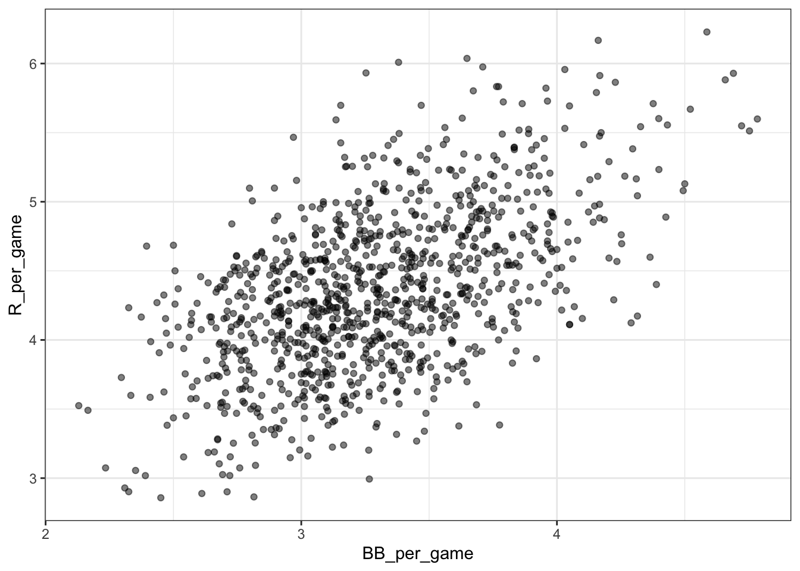
2.4 Assessment - Baseball as a Motivating Example
- What is the application of statistics and data science to baseball called?
- A. Moneyball
- B. Sabermetrics
- C. The “Oakland A’s Approach”
- D. There is no specific name for this; it’s just data science.
- Which of the following outcomes is not included in the batting average?
- A. A home run
- B. A base on balls
- C. An out
- D. A single
- Why do we consider team statistics as well as individual player statistics?
- A. The success of any individual player also depends on the strength of their team.
- B. Team statistics can be easier to calculate.
- C. The ultimate goal of sabermetrics is to rank teams, not players.
- You want to know whether teams with more at-bats per game have more runs per game. What R code below correctly makes a scatter plot for this relationship?
Teams %>% filter(yearID %in% 1961:2001 ) %>%
mutate(AB_per_game = AB/G, R_per_game = R/G) %>%
ggplot(aes(AB_per_game, R_per_game)) +
geom_point(alpha = 0.5)
- A.
Teams %>% filter(yearID %in% 1961:2001 ) %>%
ggplot(aes(AB, R)) +
geom_point(alpha = 0.5)- B.
Teams %>% filter(yearID %in% 1961:2001 ) %>%
mutate(AB_per_game = AB/G, R_per_game = R/G) %>%
ggplot(aes(AB_per_game, R_per_game)) +
geom_point(alpha = 0.5)- C.
Teams %>% filter(yearID %in% 1961:2001 ) %>%
mutate(AB_per_game = AB/G, R_per_game = R/G) %>%
ggplot(aes(AB_per_game, R_per_game)) +
geom_line()- D.
Teams %>% filter(yearID %in% 1961:2001 ) %>%
mutate(AB_per_game = AB/G, R_per_game = R/G) %>%
ggplot(aes(R_per_game, AB_per_game)) +
geom_point()- What does the variable “SOA” stand for in the Teams table?
Hint: make sure to use the help file (?Teams).
- A. sacrifice out
- B. slides or attempts
- C. strikeouts by pitchers
- D. accumulated singles
- Load the Lahman library. Filter the
Teamsdata frame to include years from 1961 to 2001. Make a scatterplot of runs per game versus at bats (AB) per game.
Teams %>% filter(yearID %in% 1961:2001) %>%
mutate(AB_per_game = AB / G, R_per_game = R / G) %>%
ggplot(aes(AB_per_game, R_per_game)) +
geom_point(alpha = 0.5)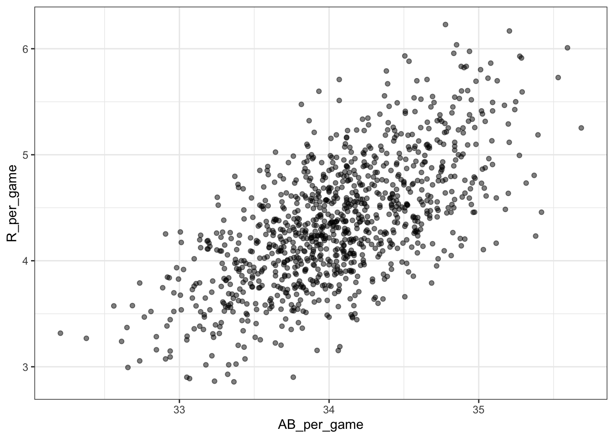
Which of the following is true?
- A. There is no clear relationship between runs and at bats per game.
- B. As the number of at bats per game increases, the number of runs per game tends to increase.
- C. As the number of at bats per game increases, the number of runs per game tends to decrease.
- Use the filtered
Teamsdata frame from Question 6. Make a scatterplot of win rate (number of wins per game) versus number of fielding errors (E) per game.
Teams %>% filter(yearID %in% 1961:2001) %>%
mutate(win_rate = W / G, E_per_game = E / G) %>%
ggplot(aes(win_rate, E_per_game)) +
geom_point(alpha = 0.5)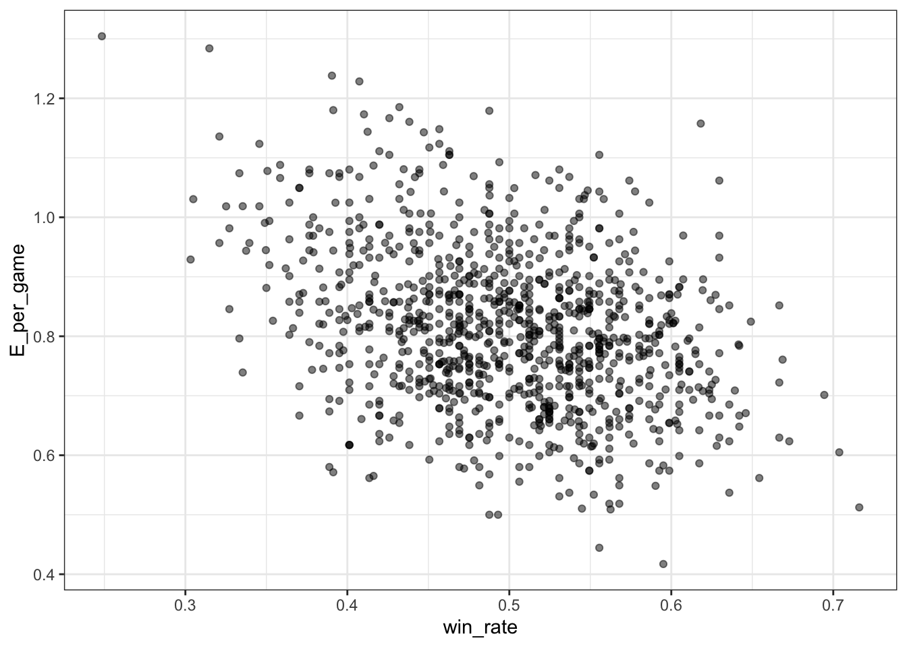
Which of the following is true?
- A. There is no relationship between win rate and errors per game.
- B. As the number of errors per game increases, the win rate tends to increase.
- C. As the number of errors per game increases, the win rate tends to decrease.
- Use the filtered
Teamsdata frame from Question 6. Make a scatterplot of triples (X3B) per game versus doubles (X2B) per game.
Teams %>% filter(yearID %in% 1961:2001) %>%
mutate(doubles_per_game = X2B / G, triples_per_game = X3B / G) %>%
ggplot(aes(doubles_per_game, triples_per_game)) +
geom_point(alpha = 0.5)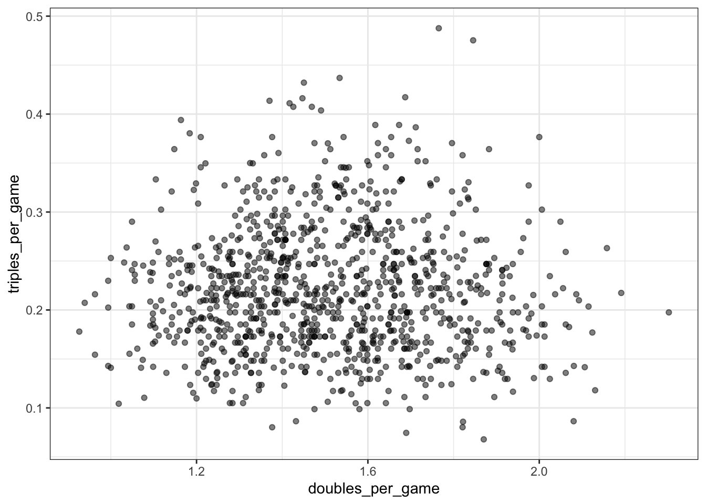
Which of the following is true?
- A. There is no clear relationship between doubles per game and triples per game.
- B. As the number of doubles per game increases, the number of triples per game tends to increase.
- C. As the number of doubles per game increases, the number of triples per game tends to decrease.
2.5 Correlation
The corresponding textbook section is Case Study: is height hereditary?
Key points
- Galton tried to predict sons’ heights based on fathers’ heights.
- The mean and standard errors are insufficient for describing an important characteristic of the data: the trend that the taller the father, the taller the son.
- The correlation coefficient is an informative summary of how two variables move together that can be used to predict one variable using the other.
Code
# create the dataset
if(!require(HistData)) install.packages("HistData")## Loading required package: HistDatalibrary(HistData)
data("GaltonFamilies")
set.seed(1983)
galton_heights <- GaltonFamilies %>%
filter(gender == "male") %>%
group_by(family) %>%
sample_n(1) %>%
ungroup() %>%
select(father, childHeight) %>%
rename(son = childHeight)
# means and standard deviations
galton_heights %>%
summarize(mean(father), sd(father), mean(son), sd(son))## # A tibble: 1 x 4
## `mean(father)` `sd(father)` `mean(son)` `sd(son)`
## <dbl> <dbl> <dbl> <dbl>
## 1 69.1 2.55 69.2 2.71# scatterplot of father and son heights
galton_heights %>%
ggplot(aes(father, son)) +
geom_point(alpha = 0.5)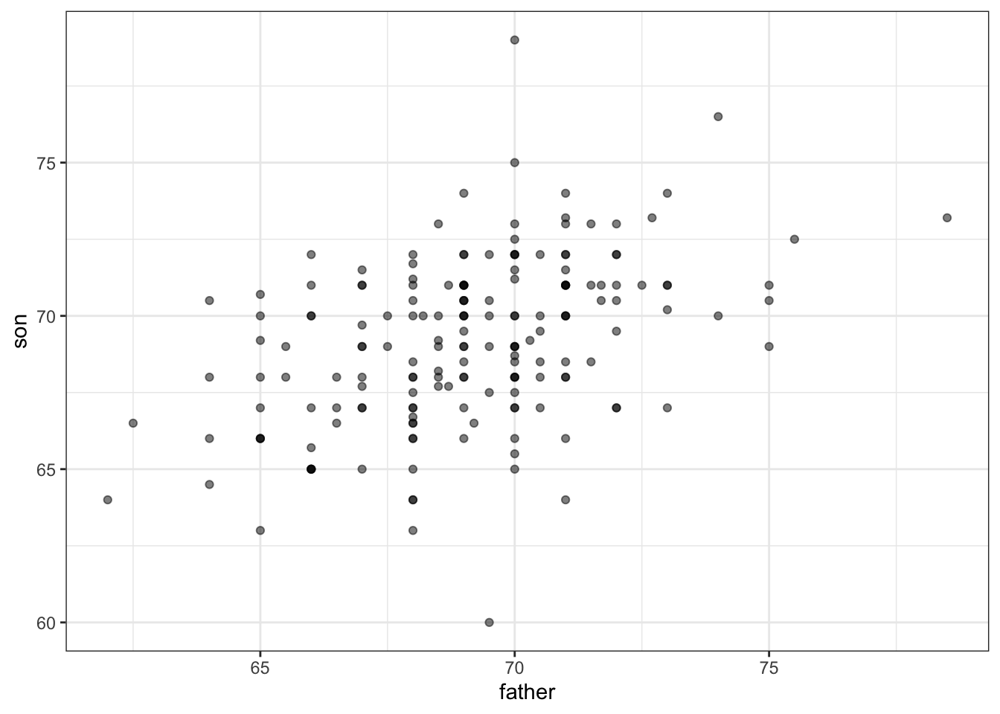
2.6 Correlation Coefficient
The corresponding textbook section is the correlation coefficient
Key points
- The correlation coefficient is defined for a list of pairs \((x_1, y_1), ..., (x_n, y_n)\) as the product of the standardized values: \((\frac{x_i - \mu_x}{\sigma_x})(\frac{y_i -\mu_y}{\sigma_y})\).
- The correlation coefficient essentially conveys how two variables move together.
- The correlation coefficient is always between -1 and 1.
Code
rho <- mean(scale(x)*scale(y))galton_heights <- GaltonFamilies %>% filter(childNum == 1 & gender == "male") %>% select(father, childHeight) %>% rename(son = childHeight)
galton_heights %>% summarize(r = cor(father, son)) %>% pull(r)## [1] 0.50072482.7 Sample Correlation is a Random Variable
The corresponding textbook section is Sample correlation is a random variable
Key points
- The correlation that we compute and use as a summary is a random variable.
- When interpreting correlations, it is important to remember that correlations derived from samples are estimates containing uncertainty.
- Because the sample correlation is an average of independent draws, the central limit theorem applies.
Code
# compute sample correlation
R <- sample_n(galton_heights, 25, replace = TRUE) %>%
summarize(r = cor(father, son))
R## r
## 1 0.4787613# Monte Carlo simulation to show distribution of sample correlation
B <- 1000
N <- 25
R <- replicate(B, {
sample_n(galton_heights, N, replace = TRUE) %>%
summarize(r = cor(father, son)) %>%
pull(r)
})
qplot(R, geom = "histogram", binwidth = 0.05, color = I("black"))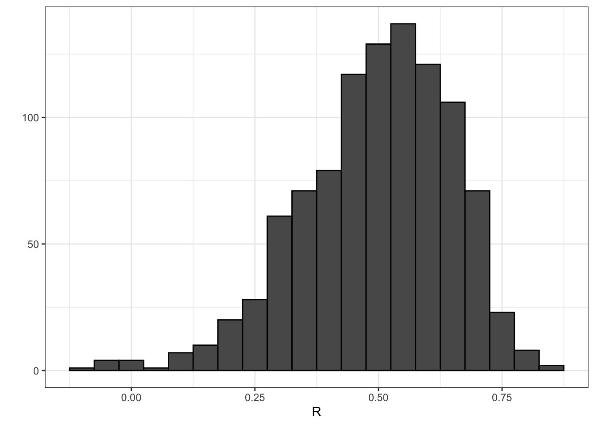
# expected value and standard error
mean(R)## [1] 0.4970997sd(R)## [1] 0.1512451# QQ-plot to evaluate whether N is large enough
data.frame(R) %>%
ggplot(aes(sample = R)) +
stat_qq() +
geom_abline(intercept = mean(R), slope = sqrt((1-mean(R)^2)/(N-2)))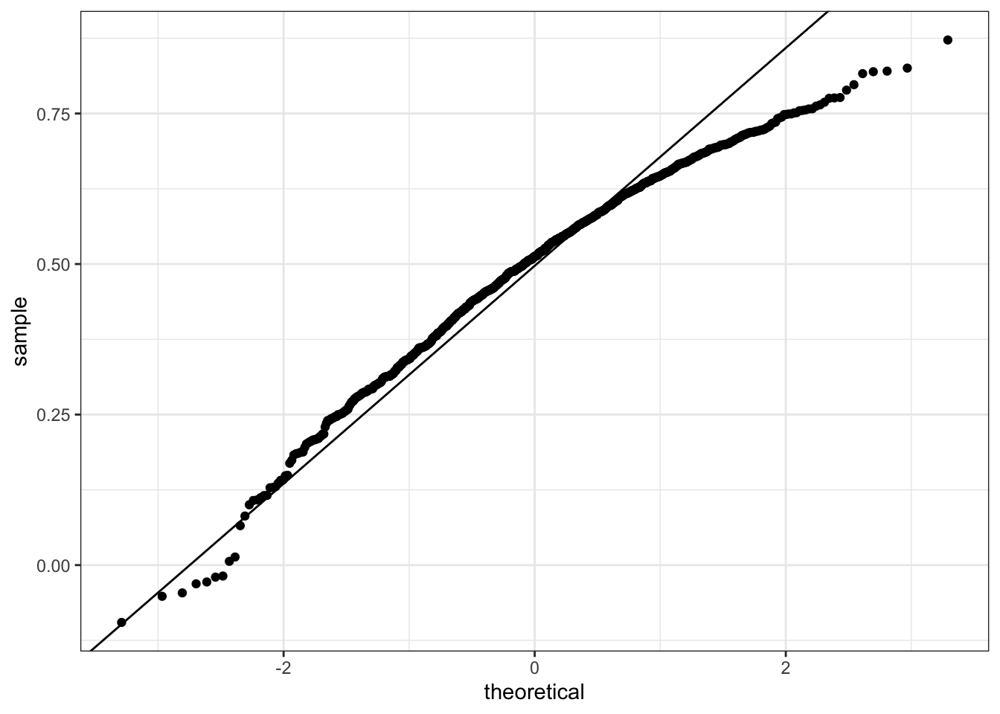
2.8 Assessment - Correlation
- While studying heredity, Francis Galton developed what important statistical concept?
- A. Standard deviation
- B. Normal distribution
- C. Correlation
- D. Probability
- The correlation coefficient is a summary of what?
- A. The trend between two variables
- B. The dispersion of a variable
- C. The central tendency of a variable
- D. The distribution of a variable
- Below is a scatter plot showing the relationship between two variables, x and y.

Scatter plot relationship x and y
From this figure, the correlation between x and y appears to be about:
- A. -0.9
- B. -0.2
- C. 0.9
- D. 2
- Instead of running a Monte Carlo simulation with a sample size of 25 from our 179 father-son pairs, we now run our simulation with a sample size of 50.
Would you expect the mean of our sample correlation to increase, decrease, or stay approximately the same?
- A. Increase
- B. Decrease
- C. Stay approximately the same
- Instead of running a Monte Carlo simulation with a sample size of 25 from our 179 father-son pairs, we now run our simulation with a sample size of 50.
Would you expect the standard deviation of our sample correlation to increase, decrease, or stay approximately the same?
- A. Increase
- B. Decrease
- C. Stay approximately the same
- If X and Y are completely independent, what do you expect the value of the correlation coefficient to be?
- A. -1
- B. -0.5
- C. 0
- D. 0.5
- E. 1
- F. Not enough information to answer the question
- Load the Lahman library. Filter the
Teamsdata frame to include years from 1961 to 2001.
What is the correlation coefficient between number of runs per game and number of at bats per game?
Teams_small <- Teams %>% filter(yearID %in% 1961:2001)
cor(Teams_small$R/Teams_small$G, Teams_small$AB/Teams_small$G)## [1] 0.6580976- Use the filtered
Teamsdata frame from Question 7.
What is the correlation coefficient between win rate (number of wins per game) and number of errors per game?
cor(Teams_small$W/Teams_small$G, Teams_small$E/Teams_small$G)## [1] -0.3396947- Use the filtered
Teamsdata frame from Question 7.
What is the correlation coefficient between doubles (X2B) per game and triples (X3B) per game?
cor(Teams_small$X2B/Teams_small$G, Teams_small$X3B/Teams_small$G)## [1] -0.011574042.9 Anscombe’s Quartet/Stratification
There are three links to relevant sections of the textbook:
Key points
- Correlation is not always a good summary of the relationship between two variables.
- The general idea of conditional expectation is that we stratify a population into groups and compute summaries in each group.
- A practical way to improve the estimates of the conditional expectations is to define strata of with similar values of x.
- If there is perfect correlation, the regression line predicts an increase that is the same number of SDs for both variables. If there is 0 correlation, then we don’t use x at all for the prediction and simply predict the average \(\mu_y\). For values between 0 and 1, the prediction is somewhere in between. If the correlation is negative, we predict a reduction instead of an increase.
Code
# number of fathers with height 72 or 72.5 inches
sum(galton_heights$father == 72)## [1] 8sum(galton_heights$father == 72.5)## [1] 1# predicted height of a son with a 72 inch tall father
conditional_avg <- galton_heights %>%
filter(round(father) == 72) %>%
summarize(avg = mean(son)) %>%
pull(avg)
conditional_avg## [1] 71.83571# stratify fathers' heights to make a boxplot of son heights
galton_heights %>% mutate(father_strata = factor(round(father))) %>%
ggplot(aes(father_strata, son)) +
geom_boxplot() +
geom_point()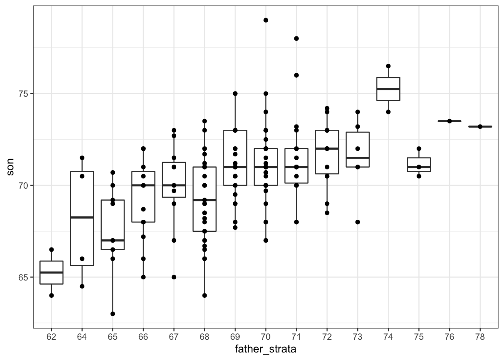
# center of each boxplot
galton_heights %>%
mutate(father = round(father)) %>%
group_by(father) %>%
summarize(son_conditional_avg = mean(son)) %>%
ggplot(aes(father, son_conditional_avg)) +
geom_point()## `summarise()` ungrouping output (override with `.groups` argument)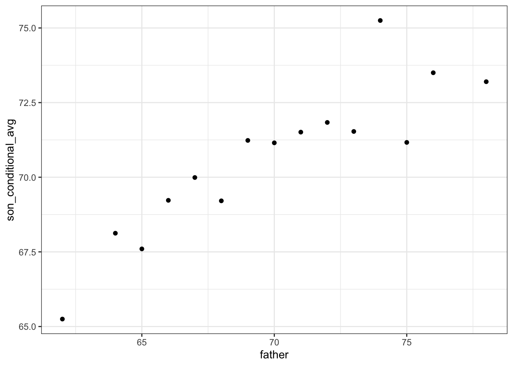
# calculate values to plot regression line on original data
mu_x <- mean(galton_heights$father)
mu_y <- mean(galton_heights$son)
s_x <- sd(galton_heights$father)
s_y <- sd(galton_heights$son)
r <- cor(galton_heights$father, galton_heights$son)
m <- r * s_y/s_x
b <- mu_y - m*mu_x
# add regression line to plot
galton_heights %>%
ggplot(aes(father, son)) +
geom_point(alpha = 0.5) +
geom_abline(intercept = b, slope = m)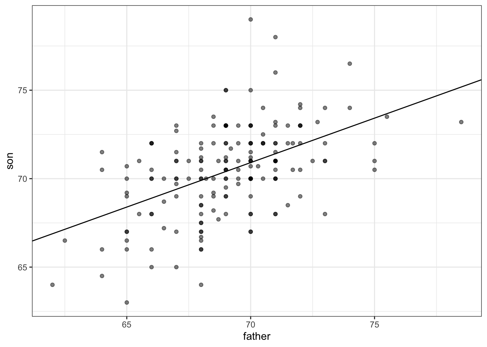
2.10 Bivariate Normal Distribution
There is a link to the relevant section of the textbook: Bivariate normal distribution (advanced)
Key points
- When a pair of random variables are approximated by the bivariate normal distribution, scatterplots look like ovals. They can be thin (high correlation) or circle-shaped (no correlation).
- When two variables follow a bivariate normal distribution, computing the regression line is equivalent to computing conditional expectations.
- We can obtain a much more stable estimate of the conditional expectation by finding the regression line and using it to make predictions.
Code
galton_heights %>%
mutate(z_father = round((father - mean(father)) / sd(father))) %>%
filter(z_father %in% -2:2) %>%
ggplot() +
stat_qq(aes(sample = son)) +
facet_wrap( ~ z_father)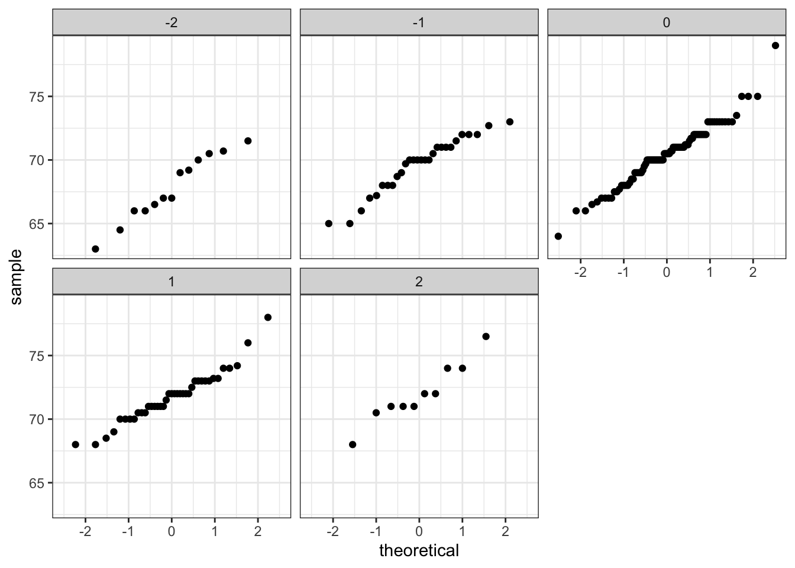
2.11 Variance Explained
There is a link to the relevant section of the textbook: Variance explained
Key points
- Conditioning on a random variable X can help to reduce variance of response variable Y.
- The standard deviation of the conditional distribution is \(\mbox{SD}(Y \mid X=x) = \sigma_y\sqrt{1-\rho^2}\), which is smaller than the standard deviation without conditioning \(\sigma_y\).
- Because variance is the standard deviation squared, the variance of the conditional distribution is \(\sigma_y^2(1-\rho^2)\).
- In the statement “X explains such and such percent of the variability,” the percent value refers to the variance. The variance decreases by \(\rho^2\) percent.
- The “variance explained” statement only makes sense when the data is approximated by a bivariate normal distribution.
2.12 There are Two Regression Lines
There is a link to the relevant section of the textbook: Warning: there are two regression lines
Key point
There are two different regression lines depending on whether we are taking the expectation of Y given X or taking the expectation of X given Y.
Code
# compute a regression line to predict the son's height from the father's height
mu_x <- mean(galton_heights$father)
mu_y <- mean(galton_heights$son)
s_x <- sd(galton_heights$father)
s_y <- sd(galton_heights$son)
r <- cor(galton_heights$father, galton_heights$son)
m_1 <- r * s_y / s_x
b_1 <- mu_y - m_1*mu_x
m_1 # slope 1## [1] 0.5027904b_1 # intercept 1## [1] 35.71249# compute a regression line to predict the father's height from the son's height
m_2 <- r * s_x / s_y
b_2 <- mu_x - m_2*mu_y
m_2 # slope 2## [1] 0.4986676b_2 # intercept 2## [1] 33.965392.13 Assessment - Stratification and Variance Explained, Part 1
- Look at the figure below. The slope of the regression line in this figure is equal to what, in words?
Scatter plot and regression line of son and father heights
- A. Slope = (correlation coefficient of son and father heights) * (standard deviation of sons’ heights / standard deviation of fathers’ heights)
- B. Slope = (correlation coefficient of son and father heights) * (standard deviation of fathers’ heights / standard deviation of sons’ heights)
- C. Slope = (correlation coefficient of son and father heights) / (standard deviation of sons’ heights * standard deviation of fathers’ heights)
- D. Slope = (mean height of fathers) - (correlation coefficient of son and father heights * mean height of sons).
- Why does the regression line simplify to a line with intercept zero and slope \(\rho\) when we standardize our x and y variables? Try the simplification on your own first!
- A. When we standardize variables, both x and y will have a mean of one and a standard deviation of zero. When you substitute this into the formula for the regression line, the terms cancel out until we have the following equation: \(y_i = \rho x_i\).
- B. When we standardize variables, both x and y will have a mean of zero and a standard deviation of one. When you substitute this into the formula for the regression line, the terms cancel out until we have the following equation: \(y_i = \rho x_i\).
- C. When we standardize variables, both x and y will have a mean of zero and a standard deviation of one. When you substitute this into the formula for the regression line, the terms cancel out until we have the following equation: \(y_i = \rho + x_i\).
- What is a limitation of calculating conditional means?
- A. Each stratum we condition on (e.g., a specific father’s height) may not have many data points.
- B. Because there are limited data points for each stratum, our average values have large standard errors.
- C. Conditional means are less stable than a regression line.
- D. Conditional means are a useful theoretical tool but cannot be calculated.
- A regression line is the best prediction of Y given we know the value of X when:
- A. X and Y follow a bivariate normal distribution.
- B. Both X and Y are normally distributed.
- C. Both X and Y have been standardized.
- D. There are at least 25 X-Y pairs.
- Which one of the following scatterplots depicts an x and y distribution that is NOT well-approximated by the bivariate normal distribution?
- A.
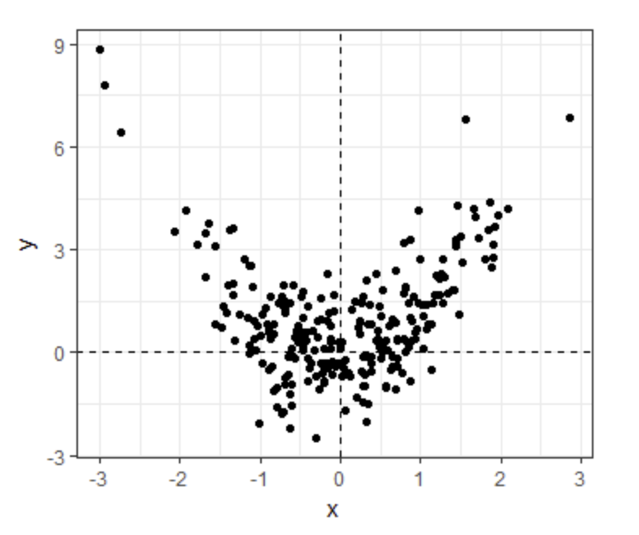
- B.
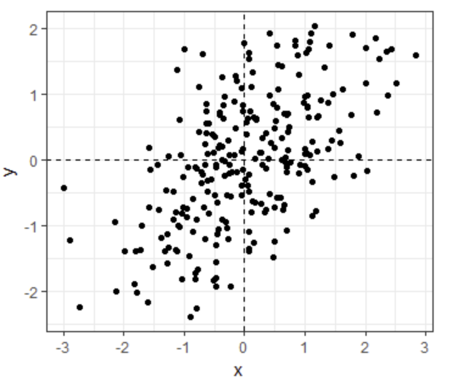
- C.
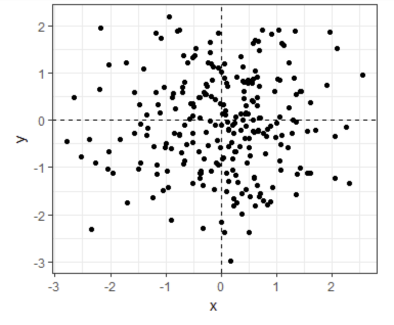
- D.
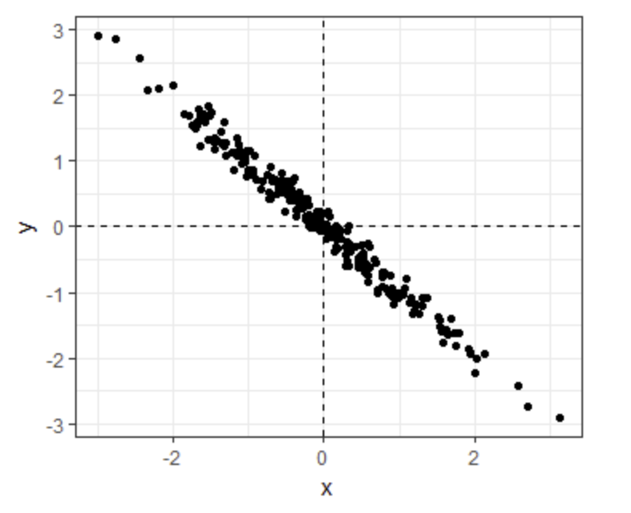
- We previously calculated that the correlation coefficient between fathers’ and sons’ heights is 0.5.
Given this, what percent of the variation in sons’ heights is explained by fathers’ heights?
- A. 0%
- B. 25%
- C. 50%
- D. 75%
When two variables follow a bivariate normal distribution, the variation explained can be calculated as \(\rho^2 \times 100\).
- Suppose the correlation between father and son’s height is 0.5, the standard deviation of fathers’ heights is 2 inches, and the standard deviation of sons’ heights is 3 inches.
Given a one inch increase in a father’s height, what is the predicted change in the son’s height?
- A. 0.333
- B. 0.5
- C. 0.667
- D. 0.75
- E. 1
- F. 1.5
The slope of the regression line is calculated by multiplying the correlation coefficient by the ratio of the standard deviation of son heights and standard deviation of father heights: \(\sigma_{son}/\sigma_{father}\).
2.14 Assessment - Stratification and Variance Explained, Part 2
In the second part of this assessment, you’ll analyze a set of mother and daughter heights, also from GaltonFamilies.
Define female_heights, a set of mother and daughter heights sampled from GaltonFamilies, as follows:
set.seed(1989, sample.kind="Rounding") #if you are using R 3.6 or later## Warning in set.seed(1989, sample.kind = "Rounding"): non-uniform 'Rounding' sampler usedfemale_heights <- GaltonFamilies%>%
filter(gender == "female") %>%
group_by(family) %>%
sample_n(1) %>%
ungroup() %>%
select(mother, childHeight) %>%
rename(daughter = childHeight)- Calculate the mean and standard deviation of mothers’ heights, the mean and standard deviation of daughters’ heights, and the correlaton coefficient between mother and daughter heights.
Mean of mothers’ heights
mean(female_heights$mother)## [1] 64.125Standard deviation of mothers’ heights
sd(female_heights$mother)## [1] 2.289292Mean of daughters’ heights
mean(female_heights$daughter)## [1] 64.28011Standard deviation of daughters’ heights
sd(female_heights$daughter)## [1] 2.39416Correlation coefficient
cor(female_heights$mother, female_heights$daughter)## [1] 0.3245199- Calculate the slope and intercept of the regression line predicting daughters’ heights given mothers’ heights. Given an increase in mother’s height by 1 inch, how many inches is the daughter’s height expected to change?
Slope of regression line predicting daughters’ height from mothers’ heights
r <- cor(female_heights$mother, female_heights$daughter)
s_y <- sd(female_heights$daughter)
s_x <- sd(female_heights$mother)
r * s_y/s_x## [1] 0.3393856Intercept of regression line predicting daughters’ height from mothers’ heights
mu_y <- mean(female_heights$daughter)
mu_x <- mean(female_heights$mother)
mu_y - (r * s_y/s_x)*mu_x## [1] 42.51701Change in daughter’s height in inches given a 1 inch increase in the mother’s height
r * s_y/s_x## [1] 0.3393856- What percent of the variability in daughter heights is explained by the mother’s height?
r^2*100## [1] 10.53132- A mother has a height of 60 inches.
What is the conditional expected value of her daughter’s height given the mother’s height?
m = r * s_y/s_x
b = mu_y - (r * s_y/s_x)*mu_x
x = 60
m*x+b## [1] 62.88015